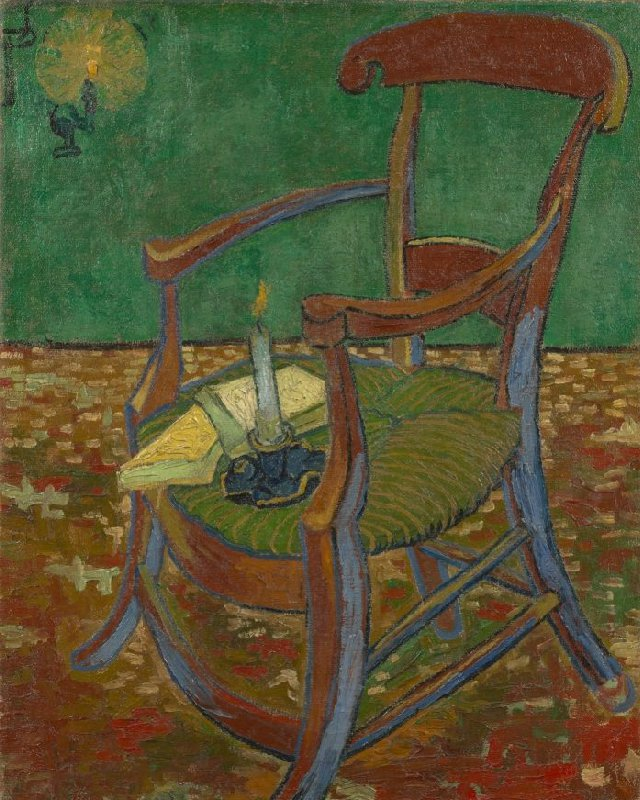

Vincent Van Gogh
The colors of a life
Vincent van Gogh, the master of the canvas that dances with color, transcends the boundaries of reality and invites us to explore his universe through a vibrant and passionate palette. His painting technique, bold and expressive, not only captures the essence of his time but also reveals the torrent of emotions flowing through his tormented soul. Van Gogh was not merely a painter; he was a poet of color. His brushstrokes, like verses in a lyrical masterpiece, created a visual symphony that awakened the senses. Each stroke was an expression of his inner turmoil and his deep connection with the nature surrounding him. On the canvas, colors become his most intimate confidants. Sunflowers burst forth in radiant yellows, capturing the vitality of life. The starry night unfolds in deep blues, a celestial dance reflecting the restlessness of his nocturnal soul. In every brushstroke, the tones intertwine, creating a texture that goes beyond the visual, reaching the tactile, as if you could feel the paint beneath your fingers. His unique technique was not just a means to represent the world but also to express his inner reality. The colors, intense and poignant, become a language that speaks directly to the viewer, inviting them to immerse themselves in Van Gogh's emotional maelstrom. Van Gogh didn't just paint; he poured his soul into each stroke. His palette was an instrument that played the strings of the human heart. Through his inimitable technique, he invites us to experience the world as he saw it: a symphony of colors that unfolds between reality and imagination. In each work, the magic of Van Gogh persists, drawing us into a chromatic journey that transcends time and resonates in the eternity of art.
Discover Van Gogh's World Through His Colors Vincent van Gogh wasn't just a painter; he was a wizard of the palette, an artist who used colors as a language to express his deepest emotions. Each stroke, each brushstroke was a note in a visual symphony that invited the viewer to immerse themselves in his vibrant and passionate world. A Dance of Emotions in Colors: Van Gogh didn't simply apply colors to his canvases; he infused them with emotions. His sunflowers distilled radiant joy, while the "Starry Night" painted the melancholy of the universe. Each color, carefully chosen, was an expression of his rich emotional palette. Colors that Tell Stories: Explore the narrative behind his chromatic choices. The warm tones of yellow tell stories of sun and vitality, while deep blues narrate the restless nights of his soul. Immerse yourself in the psychology of each shade and discover how Van Gogh transformed colors into bearers of meaning. The Art of Coloring Life: Van Gogh drew direct inspiration from nature to select his colors. From golden wheat fields to starry skies, each piece was a reflection of life's own color palette. Explore how art becomes a vivid and emotional representation of the surrounding nature. Colors that Resonate Through Time: Van Gogh's boldness and experimentation with colors not only revolutionized his era but also left an indelible mark on art history. His works continue to resonate through time, reminding us of color's unique ability to tell stories beyond words. Immerse Yourself in Van Gogh's Chromatic Universe and Let the Colors Tell You Their Story.

Vincent van Gogh, born on March 30, 1853, in the Netherlands, was a visionary post-impressionist artist whose masterpieces deeply influenced modern art. Despite his brief artistic career, van Gogh left a lasting legacy with his unique and passionate approach to painting. Despite facing mental and emotional challenges, his contribution to the art world endures as an intense expression of human beauty and anguish.